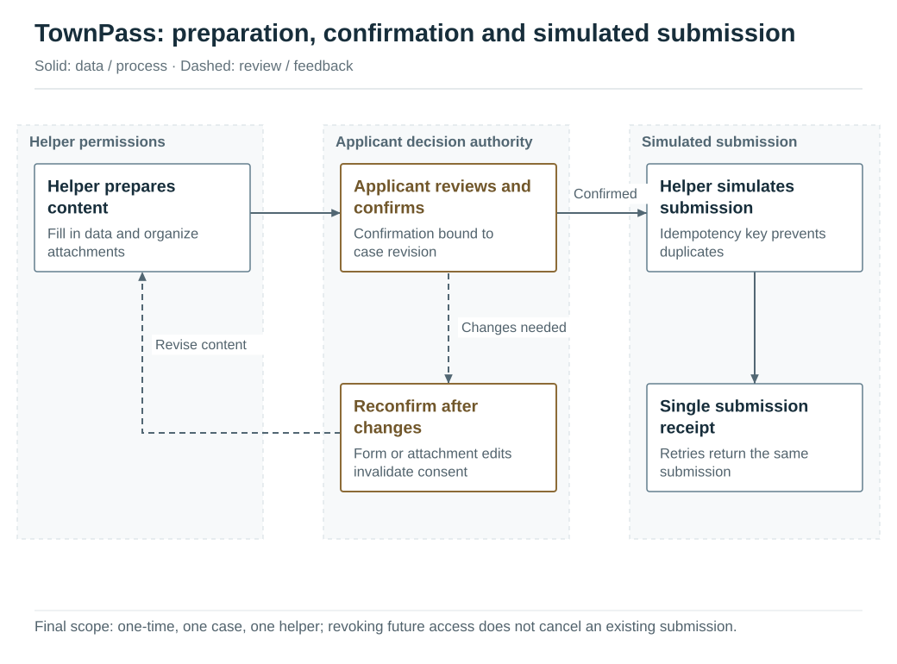
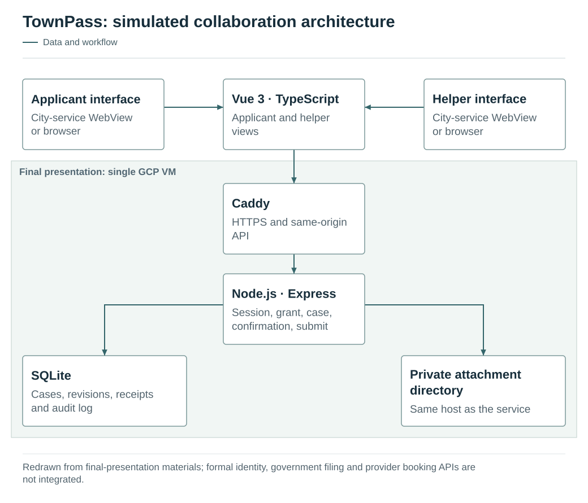

Context and objectives
Digital-service users may need assistance, while authorization and final submission responsibility must remain clear. I proposed an assisted workflow where helpers prepare content and applicants confirm before simulated submission.
- The helper prepares content; the applicant retains confirmation and decision authority.
- The final demonstration focuses on a simulated one-time flow with one case and one helper.
System architecture and workflow
Architecture overview
- Inputs
- Application and appointment use cases, and applicant-helper collaboration needs.
- Process
- Define authorization, data preparation, applicant confirmation and simulated submission rules.
- Outputs
- Product specifications, team final demonstration and oral presentation.
Workflow diagram

Original result view

Interface and interaction
Original simulated-service screens separate applicant and helper entries and offer scan/link assistance. Simulation labels remain visible; role selection is not formal identity verification.


More technical detail
Responsibilities of the interfaces and backend
The applicant and helper use separate interfaces sharing backend case state. Final-stage materials use Vue 3/TypeScript, Node.js/Express and SQLite, with the city app providing a WebView entry. The team divided design and implementation according to the specification. Official authentication and government and healthcare integrations remain incomplete.
Separate design scope from demonstration scope
The full specification explores time-bound authorization and multiple cases; the final demonstration narrows this to one-time collaboration and simulated receipts. The app bridge, attachment picker and complete two-phone experience still require acceptance checks. Institution lists do not imply working bookings or guaranteed availability.
Confirmation must refer to the same content revision
The specification binds applicant confirmation to a case revision. Changes to forms or attachments invalidate prior confirmation and require it again. Short-lived handover codes support collaboration and do not constitute government identity verification.
Handle withdrawn authorization and retries
The specification requires each request to check login, case ownership and authorization, blocking further access when assistance stops. Simulated submission uses an idempotency key to avoid duplicate receipts. Revoking future access and cancelling an existing submission are separate operations.
Results and validation scope
Deliverables
Completed proposal specifications and the final presentation; the team reached the final. The demo focused on one-time, one-case, one-helper simulated collaboration.
Validation and limits
Results cover the proposal and simulated workflow; formal identity verification, government integration and real submission remain unvalidated.
- Competition scale
- 85 teams and 395 people registered nationwide; 40 teams advanced to the main competition.
- Team result
- The team reached the final.